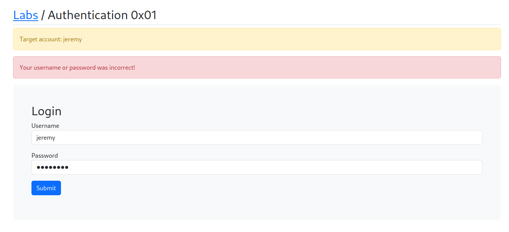

Brute Force might seem like an easy concept, but a lot of people get frustrated Cuz they're not taking the right approach and thinking methodically.
Tools we can use to pull of these attacks:
BurpSuite
FFUF
Hydra
Keep in Mind when attacking live systems, it might be slow and wordlist should not be too huge.
We might also be blocked or lock accounts or cause instablity in our target.
When we try with
Username : jeremy
Password : password

1st method-logy with BurpSuite

Send the request to the intruder by pressing ctrl + I and set the payload to the password.

Will load the password of top 1000 passwords list from Seclist and give it a try and if it doesn't work will go with 100,000 but it's of no use as Burp Suite is Throttled and rate limited.
Will filter the result with the size and Volla we got the password

2nd method-logy with FFuF
Will paste the request in a txt file and chage the password to a keyword = FUZZ
Command: ffuf -request req.txt -W /usffuf -request req.txt -request-proto http -w /usr/share/wordlists/seclists/Passwords/xato-net-10-million-passwords-10000.txt -fs 1814